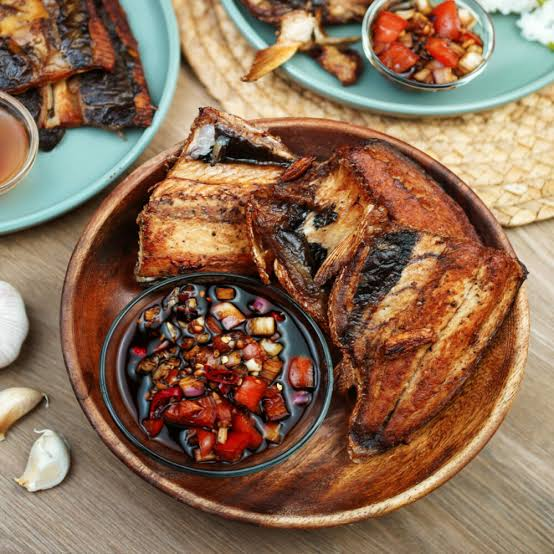

Explore Filipino home cooking, grilled favorites, and sweet treats.
Chicken simmered in a savory soy, vinegar, garlic, and bay-leaf sauce.
Pork cooked in a rich coconut-based sauce with chili.
Grilled milkfish topped with chopped tomatoes, onions, and vegetables.
Grilled pork skewers served with a Filipino-style dipping sauce.
Grilled pork belly served with a fresh dipping sauce.
Fragrant rice with toasted garlic, a favorite meal companion.
Shaved ice, sweet mix-ins, and scoops of ice cream.
Ask about the available local desserts of the day.
